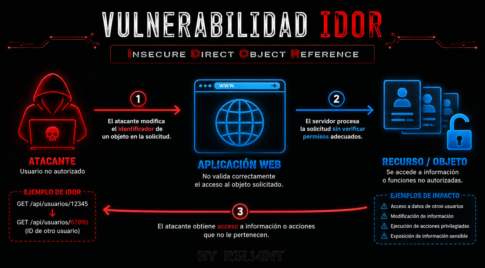

# Vulnerabilidad Insecure Direct Object Reference (IDOR)
Una Insecure Direct Object Reference (IDOR) es una vulnerabilidad de seguridad que ocurre cuando una aplicación permite acceder directamente a un recurso (como un usuario, un archivo o un documento) utilizando un identificador, sin comprobar si el usuario que realiza la solicitud realmente tiene permiso para verlo. En otras palabras, el sistema verifica que el usuario haya iniciado sesión, pero no verifica si está autorizado a acceder al recurso solicitado.
¿Cómo funciona?
La mayoría de los sitios web/APIS utilizan identificadores para acceder a la información almacenada. Por ejemplo:
$ https://ejemplo.com/perfil?id=125En este caso, el número 125 representa el perfil de un usuario. Cuando un usuario inicia sesión, el servidor debería comprobar dos cosas:
- 1) Que el usuario esté autenticado (es decir, que haya iniciado sesión).
- 2) Que tenga autorización para acceder al recurso solicitado.
Si solo se verifica el primer punto y se ignora el segundo, aparece una vulnerabilidad IDOR.

¿Qué información puede quedar expuesta?
Dependiendo de la aplicación afectada, un atacante podría acceder a:
- Información personal de otros usuarios.
- Facturas o historiales de compra.
- Documentos privados.
- Fotografías.
- Archivos almacenados.
- Mensajes internos.
- Datos financieros.
- Información confidencial de una organización.
En algunos casos, además de leer información, también es posible modificarla o eliminarla si la aplicación no realiza las validaciones adecuadas.
Diferencia entre IDOR y BOLA
Tanto IDOR (Insecure Direct Object Reference) como BOLA (Broken Object Level Authorization) son vulnerabilidades relacionadas con fallas en el control de acceso, pero se diferencian principalmente por el contexto en el que se utilizan y su alcance.
| IDOR | BOLA |
|---|---|
| Se refiere al acceso no autorizado a un recurso mediante la modificación de un identificador. | Se refiere a la falta de autorización sobre cualquier objeto solicitado, independientemente de cómo se identifique. |
| Es un término tradicional utilizado principalmente en aplicaciones web. | Es el término utilizado por OWASP para describir este problema, especialmente en APIs. |
| Generalmente implica cambiar un ID en una URL, parámetro o formulario. | Puede ocurrir con IDs, UUID, tokens, JSON, GraphQL o cualquier referencia a un objeto. |
| Se centra en la referencia directa al objeto. | Se centra en el fallo de autorización a nivel de objeto. |
# Ejemplo Práctico
Para ilustrar la explicación teórica, desarrollé tres aplicaciones web de ejemplo que contienen intencionalmente la vulnerabilidad IDOR. El objetivo es demostrar, de forma práctica, cómo este tipo de fallo puede ser explotado cuando una aplicación no implementa correctamente los controles de autorización. En la siguiente captura se observa un portal personal diseñado para gestionar información sensible. En este escenario, el usuario autenticado es bruno, quien únicamente debería poder acceder a sus propios datos.
La mayoría de las aplicaciones web y APIs identifican a cada usuario mediante un identificador único, como un ID o un nombre de usuario. En la siguiente captura puede observarse que el usuario autenticado bruno tiene asignado el ID 2, el cual se utiliza para acceder a la información de su perfil.
En condiciones normales, nuestro usuario únicamente debería tener permisos para acceder a su propia información. Sin embargo, al modificar manualmente el identificador en la solicitud (por ejemplo, cambiando el ID 2 por el ID 1), la aplicación devuelve los datos de otro usuario. Esto demuestra que el servidor no está validando correctamente si el usuario autenticado tiene autorización para acceder al recurso solicitado, dando lugar a una vulnerabilidad IDOR.
Una vulnerabilidad IDOR no se limita únicamente a los perfiles de usuario. Puede afectar cualquier recurso al que la aplicación acceda mediante un identificador. Por ejemplo, un atacante podría obtener acceso no autorizado a documentos, fotografías, pólizas de seguros, facturas, historiales médicos, archivos almacenados o cualquier otro tipo de información sensible perteneciente a otros usuarios si la aplicación no valida correctamente los permisos de acceso.
La segunda aplicación consiste en un sistema de gestión de proyectos. En este escenario, el usuario autenticado es John Smith, quien tiene acceso a dos proyectos de su propiedad. En condiciones normales, únicamente debería poder visualizar y administrar los proyectos que le pertenecen.
Observamos que el usuario John Smith puede acceder a los proyectos de otros usuarios registrados en la aplicación únicamente conociendo su ID.
La tercera aplicación corresponde a un sistema de gestión de facturas. En este escenario, el usuario autenticado es Robert Johnson, quien tiene asociadas tres facturas: INV001, INV002 e INV006. En condiciones normales, únicamente debería poder acceder a las facturas que le pertenecen.
El usuario Robert Johnson puede acceder a facturas de otros usuarios registrado en la aplicación.
Uno de los escenarios más críticos de una vulnerabilidad IDOR no es únicamente la lectura de información perteneciente a otros usuarios, sino la posibilidad de modificarla. Si la aplicación no valida correctamente los permisos sobre el recurso solicitado, un atacante puede alterar datos que no le pertenecen.
En el siguiente ejemplo se observa cómo, mediante una solicitud HTTP con el método PUT, es posible modificar una factura de otro usuario. Para ello, se envía la cabecera Content-Type: application/json y, en el cuerpo de la solicitud, el siguiente contenido:
$ {
"monto": 50000
}Si el servidor procesa esta solicitud sin verificar que el usuario autenticado tenga autorización para modificar esa factura, el monto será actualizado, evidenciando una vulnerabilidad IDOR con capacidad de escritura, un escenario considerablemente más grave que la simple exposición de información.
Personalmente, durante las pruebas de penetración autorizadas que he realizado para distintos clientes, me he encontrado con varias vulnerabilidades de tipo IDOR. Es un fallo más común de lo que muchos creen, especialmente en aplicaciones que manejan usuarios, documentos, facturas, proyectos o cualquier otro recurso identificado mediante un ID.
Por eso, siempre que durante un análisis vean que un recurso tiene un identificador propio (por ejemplo, un ID), vale la pena comprobar si la aplicación está validando correctamente los permisos de acceso sobre ese recurso. En muchos casos, una simple modificación del identificador permite descubrir que el servidor no está realizando las comprobaciones de autorización necesarias. También es habitual automatizar este tipo de verificaciones enviando múltiples solicitudes con distintos identificadores y luego analizar las respuestas del servidor para detectar posibles fallos de control de acceso de forma más rápida y eficiente; para ello pueden usar el Intruder de Burp Suite.
# BUENAS PRÁCTICAS DE SEGURIDAD FRENTE A VULNERABILIDADES IDOR
Las vulnerabilidades IDOR pueden prevenirse implementando correctamente los controles de autorización en la aplicación. A continuación, se presentan algunas de las principales recomendaciones para reducir el riesgo.
1. Validar siempre la autorización en el servidor: La medida más importante es comprobar, en cada solicitud, que el usuario autenticado tiene permisos para acceder al recurso solicitado. No basta con verificar que el usuario haya iniciado sesión; también debe validarse que el recurso le pertenece o que tiene autorización para interactuar con él.
2. No confiar en los datos enviados por el cliente: Nunca se debe asumir que los identificadores (IDs, UUIDs, nombres de archivo, etc.) enviados por el navegador son válidos o legítimos. Todos los parámetros recibidos deben considerarse potencialmente manipulables y validarse del lado del servidor.
3. Aplicar el principio de mínimo privilegio: Cada usuario debe tener acceso únicamente a los recursos estrictamente necesarios para desempeñar sus funciones. Limitar los permisos reduce significativamente el impacto de una posible vulnerabilidad.
4. Implementar controles de autorización centralizados: En lugar de validar permisos de forma diferente en cada controlador o endpoint, es recomendable centralizar la lógica de autorización mediante middleware, filtros o políticas de acceso. Esto reduce errores y facilita el mantenimiento de la aplicación.
5. Utilizar identificadores difíciles de predecir: Siempre que sea posible, utilizar identificadores aleatorios (como UUIDs) en lugar de IDs secuenciales. Aunque esto no reemplaza los controles de autorización, dificulta que un atacante pueda adivinar recursos existentes.
Importante: Cambiar IDs numéricos por UUIDs no soluciona una vulnerabilidad IDOR si el servidor sigue sin verificar los permisos.
6. Evitar exponer identificadores internos innecesariamente: Si un identificador interno no necesita ser visible para el usuario, es preferible no exponerlo en URLs, formularios o respuestas de la API. Reducir la exposición de estos identificadores disminuye la superficie de ataque.
7. Proteger todos los métodos HTTP: Las validaciones de autorización deben aplicarse a todos los métodos HTTP, no solo a las solicitudes de lectura (GET). También deben protegerse operaciones de modificación (POST, PUT, PATCH) y eliminación (DELETE).
8. Registrar y monitorear accesos sospechosos: Es recomendable registrar intentos de acceso a recursos no autorizados y generar alertas cuando se detecten comportamientos anómalos, como múltiples solicitudes consecutivas con distintos identificadores.
9. Realizar pruebas de seguridad periódicas: Durante las pruebas de penetración o revisiones de seguridad, es importante comprobar que los usuarios no puedan acceder, modificar o eliminar recursos pertenecientes a otras cuentas simplemente alterando un identificador.
10. Revisar la autorización en cada nueva funcionalidad: Cada vez que se desarrolla un nuevo módulo (facturas, documentos, perfiles, proyectos, imágenes, etc.), debe verificarse que todos los recursos implementen correctamente los controles de autorización antes de poner la aplicación en producción.